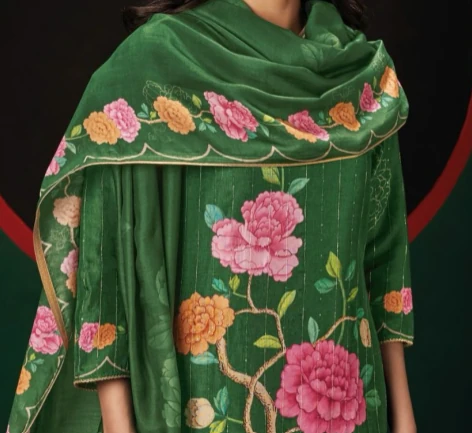
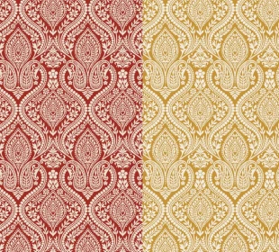
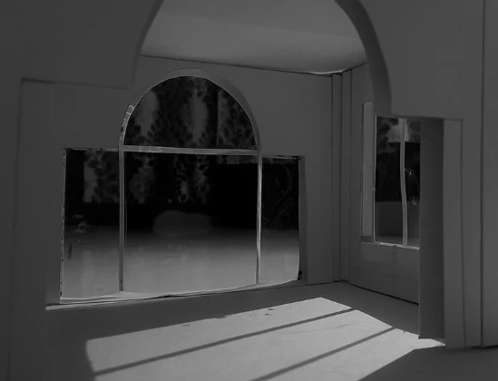
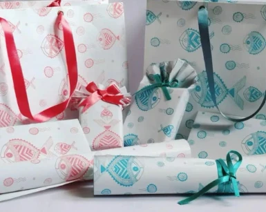
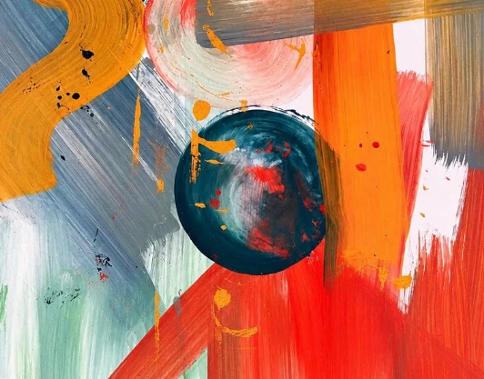
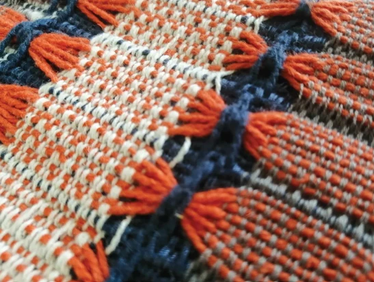
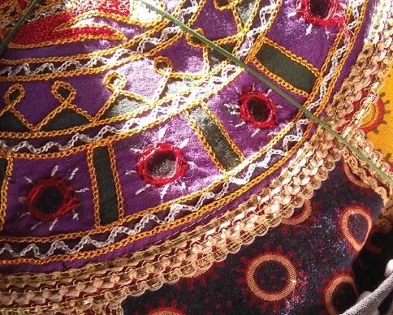
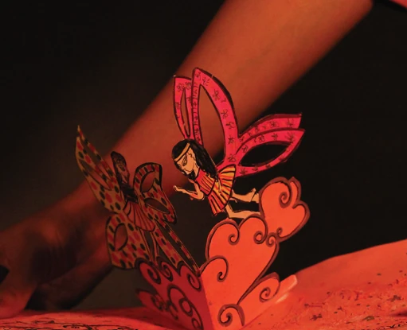
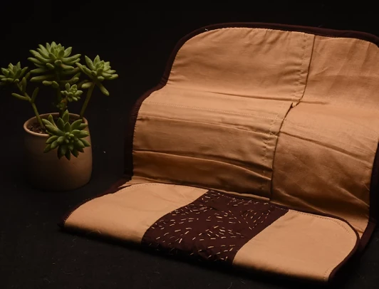

PRINT & PLACEMENT
Placement Print Design
Apparel collections exploring botanical, geometric and craft-inspired motifs, placements and embroidery.
Mumbai, India National Institute of Design alumna
I bring research, illustration, and an understanding of fabric together to create prints and collections for global clients.
A little about my practice
My work spans women’s apparel prints, surface patterns, and embroidery placements. Alongside developing artwork and colourways, I work with merchandising and production teams on sampling and design execution.
My design education at NID Haryana introduced me to materials, processes, and craft research. Today, I bring that foundation into commercial collections, combining hand-drawn exploration with Adobe Photoshop and Illustrator.
01 / Portfolio & experience
Ten collections to explore.
Print portfolios, illustration, craft and spatial design.
Showing all 10 collections

PRINT & PLACEMENT
Apparel collections exploring botanical, geometric and craft-inspired motifs, placements and embroidery.

SURFACE PATTERNS
Eight print directions featuring botanical, floral and ornamental motifs in multiple colourways.

ILLUSTRATION & PATTERN
A selection of illustrations and pattern explorations.

PRINT & PRODUCT
Print and product design work presented together.




CRAFT & PAINTING
An exploration of traditional Phad painting through a design workshop.

DESIGN RESEARCH
A project bringing together the themes of indigeneity, ecology and design.
Professional journey
Latest first · Apparel, exports & design development
Mahesh Textiles Private Limited Mumbai, Maharashtra, India
Fabric Hub Surat, Gujarat, India
B.S. Exports Mumbai, Maharashtra, India
Ganga Fashions Surat, Gujarat, India
Waste Warriors Society Dehradun, Uttarakhand, India · Internship
Supported sustainability and waste management initiatives through illustration work.
La Bellevue Resort Nainital, Uttarakhand, India · Internship
Designed products inspired by Uttarakhand’s Aipan art, working with local artisans and NGOs.
Esprit Gurugram, Haryana, India · Internship
Reviewed colours, styles, samples, and sizes; coordinated with suppliers to support merchandising activities.
02 / Education & achievements
Design education, craft exploration,
and recognition at NID Haryana.
Bachelor of Design
Textile and Apparel Design
I joined NID Haryana in 2016 and graduated in 2022. My studies covered textile prints, surface patterns, weaving, dyeing, and design research, bringing together hand-drawn artwork, digital design, and material exploration.
GOLD MEDAL
Awarded the Best Graduation Project Award and a gold medal in Textile and Apparel Design by the National Institute of Design, Haryana.
Award received in November 2020.
Degree completed in 2022.
Developed sustainable product concepts using water hyacinth fibre in collaboration with the Earthwatch Institute and Haryana Forest Department.
Conducted field research and documented traditional embroidery practices in Barmer, Rajasthan.
Studied and experimented with traditional Phad painting under National Awardee Vijay Joshi, exploring its use in contemporary design concepts.
Developed products inspired by Uttarakhand’s Aipan art while working with local artisans and NGOs.
03 / Skills & tools
Languages English & Hindi Professional working proficiency
04 / Contact
Open to new, meaningful opportunities
and creative collaborations.